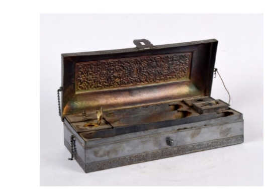

🔇 Is bhasha me is vastu ka audio abhi uplabdh nahi hai.
6. स्याहीदानी

अभिलेख संख्या: XLIV-237
आयताकार स्याहीदानी उभरी हुई आकृति वाली है, जिसमें हुक और जंजीरें लगी हुई हैं। इसमें चार खंड हैं — पहला खंड दो भागों वाले एक ट्रे के लिए है, दूसरा खंड एक भाग वाले ट्रे के लिए है, तीसरा खंड ढक्कन वाली स्याही की दवात और छिद्रदार ढक्कन वाले गोंद पाउडर पात्र के लिए है, और चौथा खंड स्याही की दवात तथा गोंद के पात्र के लिए है। ऊपरी भाग पर उभरे हुए पुष्प-लता की सीमाएँ और ओगी पैनलों में पुष्प आकृतियाँ बनी हैं। गोंद पात्र में एक ढक्कन है जिसमें एक छोटी चम्मच लगी हुई है। सभी डिज़ाइन सुनहरे रंग में बनाए गए हैं। नीचे की सतह के चारों ओर भी उभरी हुई पुष्प-लता की सजावट की गई है। यह स्याहीदानी उन्नीसवीं सदी के उत्तरार्ध की है और भारत से प्राप्त हुई है।
6. स्याहीदानी
अभिलेख संख्या: XLIV-237
आयताकार स्याहीदानी उभरी हुई आकृति वाली है, जिसमें हुक और जंजीरें लगी हुई हैं। इसमें चार खंड हैं — पहला खंड दो भागों वाले एक ट्रे के लिए है, दूसरा खंड एक भाग वाले ट्रे के लिए है, तीसरा खंड ढक्कन वाली स्याही की दवात और छिद्रदार ढक्कन वाले गोंद पाउडर पात्र के लिए है, और चौथा खंड स्याही की दवात तथा गोंद के पात्र के लिए है। ऊपरी भाग पर उभरे हुए पुष्प-लता की सीमाएँ और ओगी पैनलों में पुष्प आकृतियाँ बनी हैं। गोंद पात्र में एक ढक्कन है जिसमें एक छोटी चम्मच लगी हुई है। सभी डिज़ाइन सुनहरे रंग में बनाए गए हैं। नीचे की सतह के चारों ओर भी उभरी हुई पुष्प-लता की सजावट की गई है। यह स्याहीदानी उन्नीसवीं सदी के उत्तरार्ध की है और भारत से प्राप्त हुई है।
6. సిరా కొమ్ము
Acc No: XLIV-237
ఈ దీర్ఘచతురస్రాకారపు సిరా కొమ్ము 19వ శతాబ్దం చివరి భాగం నాటి భారతదేశం నుండి వచ్చిన కళాఖండం. దీనికి గొలుసులు మరియు తాళపు కీలు తో కూడిన ఉబ్బెత్తు మూత ఉంది. ఇది మొత్తం నాలుగు అరలుగా విభజించబడింది: మొదటి అరలో రెండు భాగాలుగా ఉన్న ఒక ట్రే; రెండవ అరలో ఒక భాగం ఉన్న ట్రే; మూడవ అరలో కీలు మూతతో కూడిన సిరా పాత్ర మరియు రంధ్రాలు ఉన్న మూతతో కూడిన పౌడర్ కంటైనర్ ఉన్నాయి; మరియు నాల్గవ అరలో మరొక సిరా పాత్ర, గమ్ కంటైనర్ ఉన్నాయి. ఈ గమ్ కంటైనర్కు చెంచాతో కూడిన స్టాపర్ ఉంది. పైభాగంలో ఉబ్బెత్తుగా చెక్కబడిన పూల లత అంచులు మరియు ఓజీ ప్యానెళ్లలో పూల నమూనాలు ఉన్నాయి. ఈ డిజైన్లన్నీ బంగారు రంగులో ఉన్నాయి. అడుగు ఉపరితలం చుట్టూ కూడా పూల లత డిజైన్లు మృదువైన ఉబ్బెత్తుగా చెక్కబడ్డాయి.
۶. دوات
Acc No: XLIV-237
یہ مستطیل دوات ابھری ہوئی ڈھکن کے ساتھ ہے جس میں کنڈی اور زنجیریں لگی ہوئی ہیں۔
اس میں چار خانے ہیں:
پہلا خانہ دو حصوں والے ٹرے کے لیے۔ دوسرا خانہ ایک حصے والے ٹرے کے لیے۔ تیسراخانہ انک پاٹ کے لیے، جس پر قبضہ دارڈھکن لگا ہے، اور ساتھ ہی باریک سوراخوں والی ڈھکن کے ساتھ سفوف رکھنے کا برتن بھی موجود ہے ۔ چوتھا خانہ سیاہی کے برتن اور قلم دان رکھنے کے لیے مخصوص ہے۔ اوپری حصے پر محرابی پینلوں میں پھولدار نقش کے ساتھ ابھار دار پھول بیل کی بارڈر نقش ہیں۔
گوند کے برتن میں ڈھکن کے ساتھ ایک چھوٹا چمچ بھی موجود ہے۔ تمام ڈیزائن سنہری رنگ میں آراستہ ہیں۔ نچلی سطح کے گرد بھی ہلکے ابھار میں پھول دار بیل بوٹوں کی نقش آرائی کی گئی ہے۔ یہ ہندوستان سے تعلق رکھتا ہے اور انیسویں صدی کے اواخر کا ہے۔
৬. দোয়াত
Acc No: XLIV-237
আয়তাকার এই দোয়াতটির ওপরের অংশটি উত্তল এবং এতে হ্যাসপ বা কড়া ও শিকল লাগানো আছে। এটি চারটি খোপ নিয়ে গঠিত — প্রথমটিতে দুটি খোপযুক্ত একটি ট্রে রয়েছে, এবং দ্বিতীয়টিতে একটি খোপের একটি ট্রে আছে। তৃতীয়টিতে রয়েছে একটি কব্জাযুক্ত ঢাকনাওয়ালা কালির পাত্র এবং ফুটোযুক্ত ঢাকনাওয়ালা ব্লটিং পাউডারের পাত্র। চতুর্থ খোপটি কালির পাত্র ও আঠার পাত্রের জন্য। এর ওপরের অংশে ওজি প্যানেলের ভেতরে ফুলের নকশা এবং চারদিকে খোদাই করা ফুলের লতার বর্ডার রয়েছে। আঠার পাত্রটিতে চামচ সহ একটি ছিপি আছে এবং সমস্ত নকশাগুলি সোনা দিয়ে করা হয়েছে। নিচের তলার চারদিকেও উপরিভাগে হালকা খোদাই করা ফুলের লতার নকশা রয়েছে। এটি ১৯ শতকের শেষের দিকে তৈরি এবং এই দোয়াতটি ভারত থেকে প্রাপ্ত।
6. ઇન્કહૉર્ન
Acc No: XLIV-237
આ આયાતાકાર ઇંકહોર્નનો ઉપરનો ભાગ થોડો વણેલો (કોન્વેક્સ) છે, જેમાં હૅસ્પમિજાગરા અને સાંકળો જોડાયેલાં છે. તેમાં ચાર ખૂણા છે — એક બે વિભાગ ધરાવતા ટ્રે માટે, બીજો એક વિભાગ ધરાવતા ટ્રે માટે, ત્રીજો હિન્જવાળું ઢાંકણું ધરાવતા શાહીદાણ (ઇંક પોટ) અને છિદ્રવાળું ઢાંકણું ધરાવતા બોટલિંગ પાવડર કન્ટેનર માટે, અને ચોથો શાહીદાણ તથા ગમ કન્ટેનર માટે. ઉપરના ભાગમાં ઓજી (ogee) આકારના પેનલોમાં ફૂલની આકૃતિઓ અને કિનારીઓ પર ફૂલ-લતાવાળી ઊભરેલી નકશી કોતરાયેલ છે. ગમ કન્ટેનરમાં ચમચીવાળું સ્ટોપર છે. ડિઝાઇન સુવર્ણ રંગમાં શોભિત છે. તળિયાના આસપાસ પણ હળવી ઊભરેલી ફૂલ-લતાવાળી નકશી દેખાય છે. આ ઇંકહોર્ન ભારતનું છે અને તેનો સમય 19મી સદીના અંતકાળનો માનવામાં આવે છે.
6. ಇಂಕ್ ಹಾರ್ನ್
Acc No: XLIV-237
ಆಯತಾಕಾರದ ಈ ಶಾಯಿದಾನಿಯ ಕಲಾಕೃತಿಯು ಉಬ್ಬಿದ ಮೇಲ್ಮೈಯನ್ನು ಹೊಂದಿದ್ದು, ಕೊಂಡಿ ಮತ್ತು ಸರಪಳಿಗಳಿಂದ ಕೂಡಿದೆ. ಈ ಕಲಾಕೃತಿಯು ನಾಲ್ಕು ವಿಭಾಗಗಳನ್ನು ಒಳಗೊಂಡಿದೆ. ಒಂದನೇ ವಿಭಾಗದಲ್ಲಿ ಎರಡು ಅಂಕಣಗಳಿರುವ ಟ್ರೇ ಇದ್ದರೆ, ಎರಡನೇ ವಿಭಾಗದಲ್ಲಿ ಕೇವಲ ಒಂದು ಅಂಕಣವಿರುವ ಟ್ರೇ ಇದೆ. ಮೂರನೇ ವಿಭಾಗದಲ್ಲಿ ಕೀಲುಗಳಿರುವ ಮುಚ್ಚಳದ ಶಾಯಿಯ ಕುಡಿಕೆ ಮತ್ತು ರಂಧ್ರಗಳಿರುವ ಮೇಲ್ಭಾಗವನ್ನು ಹೊಂದಿರುವ ಪುಡಿಯ ಡಬ್ಬಿಯಿದೆ. ನಾಲ್ಕನೇ ವಿಭಾಗವು ಮತ್ತೊಂದು ಶಾಯಿಯ ಕುಡಿಕೆ ಮತ್ತು ಅಂಟಿನ ಡಬ್ಬಿಗಾಗಿ ಮೀಸಲಾಗಿದೆ. ಈ ಅಂಟಿನ ಡಬ್ಬಿಯು ಚಮಚದೊಂದಿಗೆ ಕೂಡಿದ ಮುಚ್ಚಳವನ್ನು ಹೊಂದಿದೆ. ಇದರ ಮೇಲ್ಭಾಗದಲ್ಲಿ ಉಬ್ಬು ಕೆತ್ತನೆಯ ಹೂವಿನ ಬಳ್ಳಿಯ ಅಂಚುಗಳು ಮತ್ತು 'ಓಜೀ' ಫಲಕಗಳಲ್ಲಿ ಸುಂದರವಾದ ಹೂವಿನ ವಿನ್ಯಾಸಗಳಿವೆ. ಈ ಎಲ್ಲಾ ವಿನ್ಯಾಸಗಳು ಚಿನ್ನದ ಬಣ್ಣದಲ್ಲಿ ಕಂಗೊಳಿಸುತ್ತಿವೆ. ಇದರ ತಳಭಾಗದ ಸುತ್ತಲೂ ಕೂಡ ಕಡಿಮೆ ಉಬ್ಬು ಕೆತ್ತನೆಯಲ್ಲಿ ಹೂವಿನ ಬಳ್ಳಿಯ ವಿನ್ಯಾಸವನ್ನು ಅತ್ಯಂತ ನಾಜೂಕಾಗಿ ಮೂಡಿಸಲಾಗಿದೆ.
ಭಾರತದಲ್ಲಿಯೇ ರೂಪುಗೊಂಡಿರುವ ಈ ಶಾಯಿದಾನಿಯ ಅದ್ಭುತ ಕಲಾಕೃತಿಯು 19ನೇ ಶತಮಾನದ ಅಂತ್ಯದ ಕಾಲಕ್ಕೆ ಸೇರಿದೆ.
ಭಾರತದಲ್ಲಿಯೇ ರೂಪುಗೊಂಡಿರುವ ಈ ಶಾಯಿದಾನಿಯ ಅದ್ಭುತ ಕಲಾಕೃತಿಯು 19ನೇ ಶತಮಾನದ ಅಂತ್ಯದ ಕಾಲಕ್ಕೆ ಸೇರಿದೆ.
୬. କାଳୀ ରଖିବା ଡବା
Acc No: XLIV-237
ଏହା ଏକ ଆୟତାକାର କାଳୀପାତ୍ର ଯାହାର ଉପର ଭାଗର ଆକୃତି ଉତ୍ତଳାକାର, ଏହାକୁ ବନ୍ଦ କରିବାକୁ ଗୋଟିଏ ହୁକ ଏବଂ ଉଭୟ ପାର୍ଶ୍ୱରେ ଚେନ୍ ଲାଗିଛି। ଏହାକୁ ଚାରୋଟି ସ୍ଥାନରେ ଭାଗ କରାଯାଇଛି – ଯେଉଁଥିରୁ ପ୍ରଥମ ଭାଗରେ ଦୁଇଟି ସ୍ଥାନ ଅଛି, ଦ୍ୱିତୀୟଟିରେ ଗୋଟିଏ ସ୍ଥାନ, ତୃତୀୟଟିରେ ଖୋଳ ସହିତ କାଳୀପାତ୍ର ରଖିବା ପାଇଁ ଓ ଆଉ ଗୋଟିଏ କଣାଥିବା କ୍ୟାପ୍ ସହିତ ପାଉଡର ରଖିବା ପାଇଁ ସ୍ଥାନ ତିଆରି ହୋଇଛି, ଏବଂ ଚତୁର୍ଥଟି କାଳୀପାତ୍ର ଏବଂ ଅଠା ରଖିବା ପାଇଁ ସ୍ଥାନ ଅଛି।ଏହାର ଉପର ଭାଗରେ ଲତା ଗଛ ସହ ଫୁଲ ଖୋଦିତ କରାଯାଇଛି ଏବଂ ଉପର ଓଗି ପ୍ୟାନେଲରେ ଫୁଲର ବିଭିନ୍ନ ଶୈଳୀ ଦେଖିବାକୁ ମିଳିଥାଏ। ଅଠା ପାତ୍ରରେ ଚାମୁଚ ରଖିବା ସହିତ ଗୋଟିଏ ଷ୍ଟପର୍ ରହିଛି। ଏହାକୁ ସୁନାରେ ଡିଜାଇନ୍ କରାଯାଇଛି। ତଳ ପୃଷ୍ଠ ଭାଗର ଚାରିପାଖରେ ସୂକ୍ଷ୍ମ ଭାବରେ ଫୁଲର ଲତା ମଧ୍ୟ ଖୋଦିତ ହୋଇଥିବାର ଦେଖାଯାଏ। ଏହା ଊନବିଂଶ ଶତାବ୍ଦୀର ଶେଷ ଭାଗରେ ନିର୍ମିତ କରାଯାଇଥିଲା। ଏହି କାଳୀପାତ୍ର ଭାରତର କୌଶଳ କାରୁକାର୍ଯ୍ୟ ଅଟେ।
6. स्याहीदानी
अभिलेख संख्या: XLIV-237
आयताकार स्याहीदानी उभरी हुई आकृति वाली है, जिसमें हुक और जंजीरें लगी हुई हैं। इसमें चार खंड हैं — पहला खंड दो भागों वाले एक ट्रे के लिए है, दूसरा खंड एक भाग वाले ट्रे के लिए है, तीसरा खंड ढक्कन वाली स्याही की दवात और छिद्रदार ढक्कन वाले गोंद पाउडर पात्र के लिए है, और चौथा खंड स्याही की दवात तथा गोंद के पात्र के लिए है। ऊपरी भाग पर उभरे हुए पुष्प-लता की सीमाएँ और ओगी पैनलों में पुष्प आकृतियाँ बनी हैं। गोंद पात्र में एक ढक्कन है जिसमें एक छोटी चम्मच लगी हुई है। सभी डिज़ाइन सुनहरे रंग में बनाए गए हैं। नीचे की सतह के चारों ओर भी उभरी हुई पुष्प-लता की सजावट की गई है। यह स्याहीदानी उन्नीसवीं सदी के उत्तरार्ध की है और भारत से प्राप्त हुई है।
6. ഇങ്ക് ഹോൺ
Acc No: XLIV-237
ഉപരിതലം അല്പം ഉയർന്നു നിൽക്കുന്നതും, കൊളുത്തും ചങ്ങലകളും ഘടിപ്പിച്ചതുമായ ചതുരാകൃതിയിലുള്ള ഒരു മഷിപ്പെട്ടിയാണിത്. ഇതിന് നാല് അറകളാണുള്ളത്. ആദ്യത്തെ അറയിൽ രണ്ട് ഭാഗങ്ങളുള്ള ഒരു താലവും, രണ്ടാമത്തേതിൽ ഒരു ഭാഗമുള്ള താലവുമാണുള്ളത്. മൂന്നാമത്തെ അറയിൽ വിജാഗിരി ഘടിപ്പിച്ച മൂടിയോടു കൂടിയ മഷിക്കുപ്പിയും, മഷി ഉണക്കാൻ ഉപയോഗിക്കുന്ന പൊടി സൂക്ഷിക്കുന്ന സുഷിരങ്ങളുള്ള പാത്രവുമാണുള്ളത്. നാലാമത്തെ അറയിലാകട്ടെ മഷിക്കുപ്പിയും പശ സൂക്ഷിക്കുന്ന പാത്രവുമാണുള്ളത്.
ഇതിൻ്റെ മുകൾഭാഗത്ത് പുഷ്പലതാദികളുടെ അതിരുകളും 'ഓജി' പാനലുകളിൽ പൂക്കളുടെ മാതൃകകളും കൊത്തിവെച്ചിരിക്കുന്നു. പശ സൂക്ഷിക്കുന്ന പാത്രത്തിന് സ്പൂണോടു കൂടിയ ഒരു മൂടിയുണ്ട്. സ്വർണ്ണത്തിലാണ് ഇതിലെ അലങ്കാരങ്ങൾ ചെയ്തിരിക്കുന്നത്. അടിഭാഗത്തിന് ചുറ്റുമായി പുഷ്പലതാദികൾ ലളിതമായ രീതിയിൽ കൊത്തിവെച്ചിട്ടുണ്ട്. ഭാരതത്തിൽ നിന്നുള്ള ഈ നിർമ്മിതി പത്തൊൻപതാം നൂറ്റാണ്ടിൻ്റെ അവസാന കാലഘട്ടത്തിലേതാണ്.
ഇതിൻ്റെ മുകൾഭാഗത്ത് പുഷ്പലതാദികളുടെ അതിരുകളും 'ഓജി' പാനലുകളിൽ പൂക്കളുടെ മാതൃകകളും കൊത്തിവെച്ചിരിക്കുന്നു. പശ സൂക്ഷിക്കുന്ന പാത്രത്തിന് സ്പൂണോടു കൂടിയ ഒരു മൂടിയുണ്ട്. സ്വർണ്ണത്തിലാണ് ഇതിലെ അലങ്കാരങ്ങൾ ചെയ്തിരിക്കുന്നത്. അടിഭാഗത്തിന് ചുറ്റുമായി പുഷ്പലതാദികൾ ലളിതമായ രീതിയിൽ കൊത്തിവെച്ചിട്ടുണ്ട്. ഭാരതത്തിൽ നിന്നുള്ള ഈ നിർമ്മിതി പത്തൊൻപതാം നൂറ്റാണ്ടിൻ്റെ അവസാന കാലഘട്ടത്തിലേതാണ്.